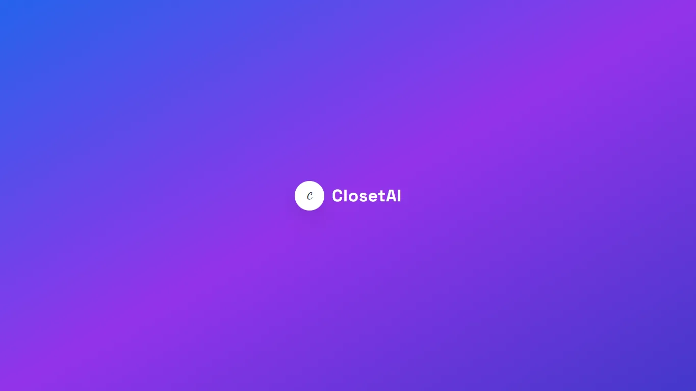
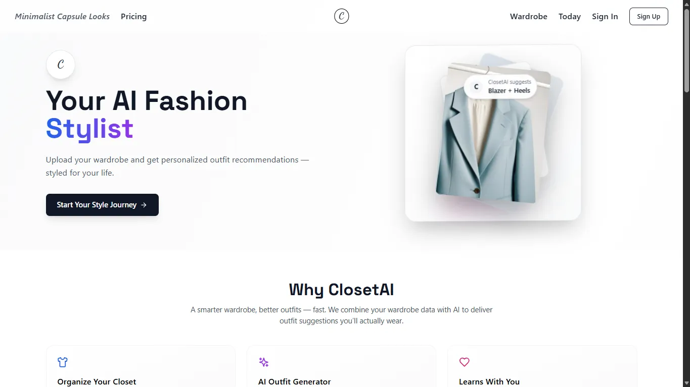
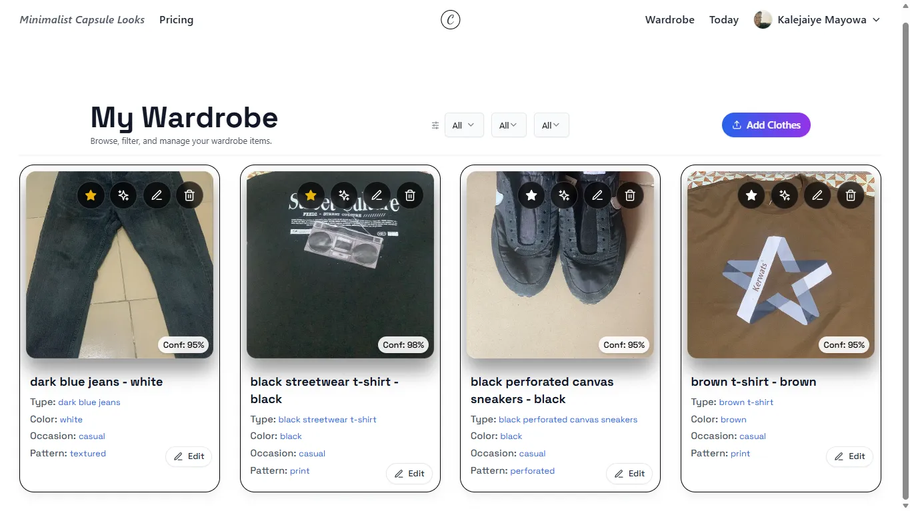
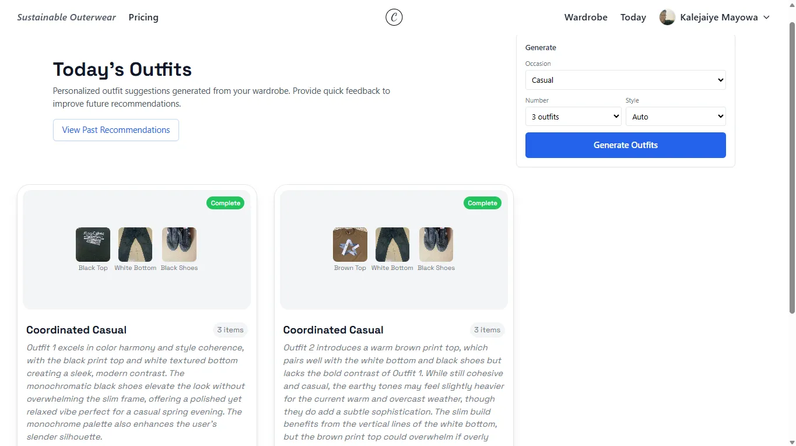

ClosetAI
An AI wardrobe product that reads a photo of the clothes you own and returns structured attributes in a single model call, then recommends outfits from that catalog—backed by a fallback chain that always returns something useful.




Context
People own more clothes than they actively use, and getting dressed still takes attention every morning. ClosetAI treats the wardrobe as a product instead of a pile, but the harder problem sat underneath the idea: building a pipeline that stays reliable when the model powering it is only right most of the time, not all of the time.
What I built
A wardrobe platform where a photo goes in, and Ministral 3 14B Instruct, a genuinely multimodal model served through NVIDIA NIM, reads it and returns structured attributes in a single call, no separate captioning step. The recommendation engine runs a three-tier fallback: full AI ranking when it’s available, a lighter model once a user has real feedback history, and rule-based scoring underneath both, so the system always returns something useful.
Why this approach
For a month after launch, every upload came back with the same result: category unknown, color unknown, confidence zero, every endpoint still returning success. The model was occasionally returning JSON cut off mid-generation, and my own parser was silently substituting “unknown” instead of raising an error. That failure is why every model output now gets treated as untrusted by default, checked against a 0.8 confidence threshold before it’s ever shown to a user as a real recommendation.
Role & scope
End to end: the vision pipeline, the validation layer, the fallback hierarchy, and the recommendation logic built on top of it.
Result
A live product with a validation layer built from a real production failure, not a theoretical one, and a fallback system that never depends on a single point of failure to return a usable answer.